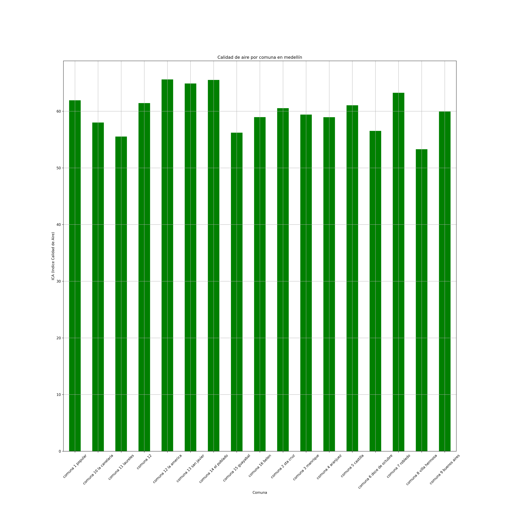
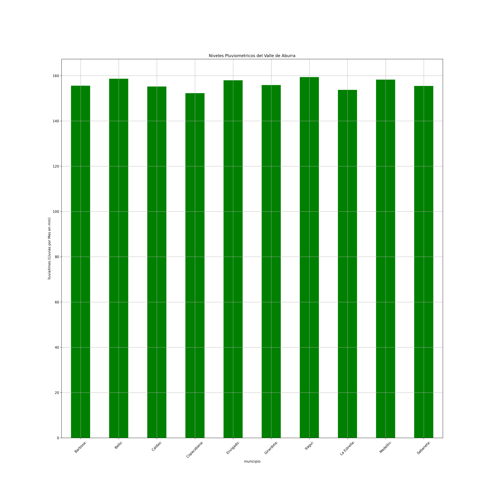
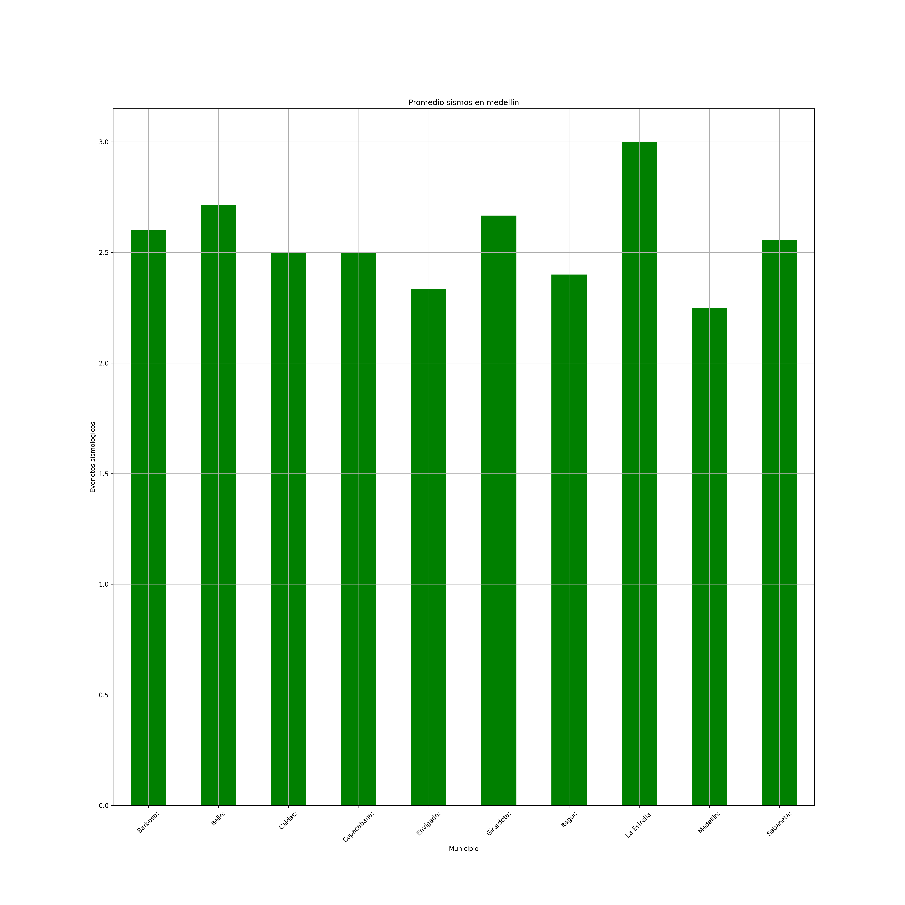
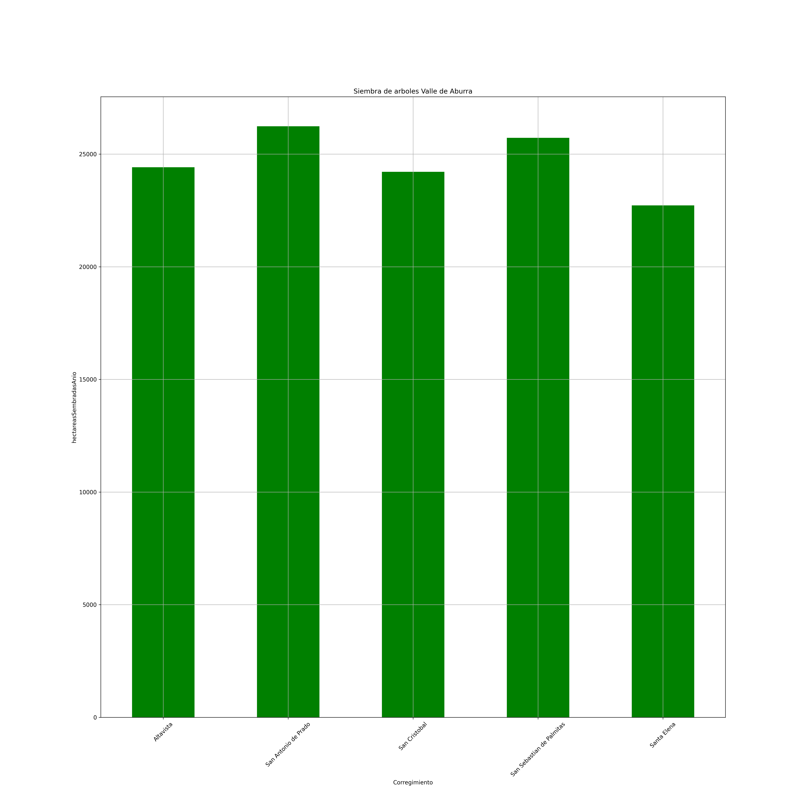

Muestra de datos del Valle de Aburra
Las siguientes tablas muestran la Calidad del Aire del Valle de Aburra
Calidad de aire positivo
Calidad de aire moderado
Calidad de aire peligroso
Análisis en gráfica

Las siguientes tablas muestran el analisis Pluviometricos del Valle de Aburra
Cantidad de Municipios
Niveles mayores a 5.3 mm dia
Análisis en gráfica
La siguiente tabla muestra el Analisis Sismico ocurridos en el Valle de Aburra
Cantidad de Sismos por Municipio
Mayor a 3 Eventos
Análisis en gráfica
Las siguientes tablas muestran la Siembra de árboles en el Valle de Aburrá en el últimos años
Siembra por Corregimientos
Bajo
Siembra por Corregimientos
Moderado
Siembra por Corregimientos
Superavit
Análisis en gráfica
